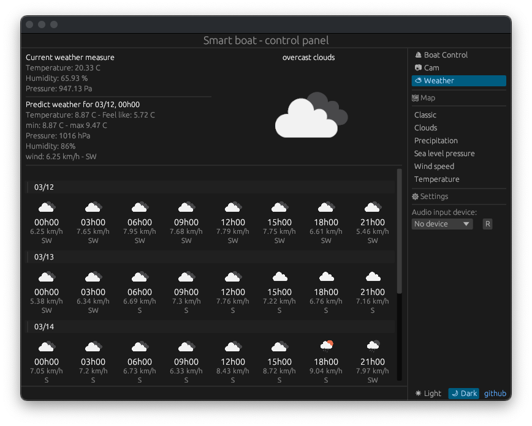
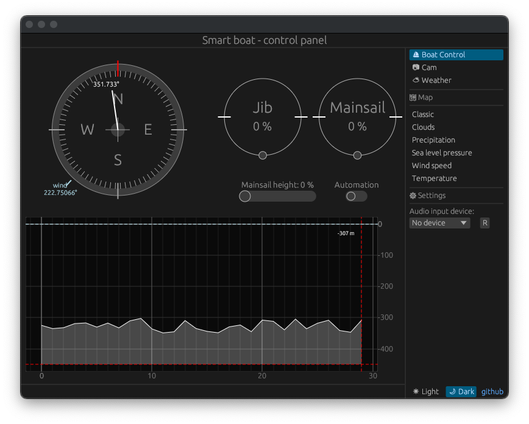

Melvin DUBEE - Tanguy ROUDAUT
ENSTA Bretagne
Ce projet met en ouvre un système intelligent intégrant une interface graphique basé sur egui et une commande vocale pour le contrôle d'une maquette de bateau. Différent capteurs de naviguation et des moteurs permettent de simuler une naviguation en sécurité et assisté.
Usage
Installation de rust
Le code de ce projet est réalisé en rust, il est donc important de l'avoir installé.
$ curl --proto '=https' --tlsv1.2 https://sh.rustup.rs -sSf | sh
Ajouter votre clé d'accès Picovoice
Vous pouvez ajouter votre clé d'accès:
- De manière temporaire dans le terminal actif avec
export PICOVOICE_ACCES_KEY="YOUR_ACCES_KEY" - De manière permanente en ajoutant cette commande dans votre
~/.bashrcou~/.zshrcem fonction du shell utilisé.
Si vous n'avez pas de clé d'accès vous pouvez en obtenir une en créant un compte sur le site de picovoice gratuitement.
Sur RaspberryOS
Cette commande marchera uniquement avec un Raspberry Pi ou un émulateur qui prend en charge les ports GPIO. Le mode sur cible prend en compte la crate rppal qui permet de contrôler les ports GPIO.
$ cargo run --features=on_target
Actuellement l'interface graphique en WASM n'a pas était réalisé. Vous devez connecter un écran au Raspberry Pi ou utiliser un serveur VNC (le serveur doit être activé avec la commande sudo raspi-config puis activer le serveur VNC dans le menu Interface).
Sur un OS différent de la cible (Mode stub)
Le mode stub vous permet d'éxecuter l'interface graphique avec une maquette simulé pour s'affranchire de capteurs et des GPIO. Cependant vous-devez quand même avoir enregistré votre clé d'accès Picovoice.
Cela est particulièrement utile pour réaliser des modifications sur l'interface graphique.
$ cargo run
Mots détecté avec la commande vocale
- wake word: "Ok Bateau"
- content:
- "Tourne/va/allons à gauche/babord"
- "Tourne/va/allons à droite/tribord"
- "vent de près à gauche/babord"
- "vent de près à droite/tribord"
- "vent de face"
- "vent arrière"
- "vent largue à gauche/babord"
- "vent largue à droite/tribord"
- "vent de travers à gauche/babord"
- "vent de travers à droite/tribord"
Capteur de température, humidité et pression

La page Weather de l'interface graphique permet d'avoir une prédiction météorologique incluant la température, la vitesse du vent ainsi que sa direction sur 5 jours.
Grâce à un capteur i2c intégré au bateau, le BME280, une mesure en temps réel de la température, humidité et pression est également disponnible.
Configuration du BME280
Avant de réaliser une lecture de donnée météorologique, il est nécessaire de configurer le capteur. On notera 3 registres:
| Nom | Adresse | Information |
|---|---|---|
| HUM_CTRL | 0xf2 | |
| MEAS_CTRL | 0xf4 | |
| CONFIG | 0xf5 |
Dans notre cas nous avons décidé d'utiliser les valeurs suivantes:
#![allow(unused)] fn main() { pub fn init(&mut self, gpio: &mut Gpio){ gpio.i2c_set_slave_addr(BME280_ADDR); gpio.i2c_write_byte(HUM_CTRL_ADDR, 0x01); gpio.i2c_write_byte(CTRL_MEAS_ADDR, 0x27); gpio.i2c_write_byte(BME280_CONFIG_ADDR, 0x00); } }
Lecture de la température
Une fois que le capteur est configuré nous pouvons commencer par lire la température qui est une valeur sur 3 octets, il faut alors lire les registres suivants: 0xfa, 0xfb, 0xfc
#![allow(unused)] fn main() { pub fn get_temperature(&mut self, gpio: &mut Gpio) -> f32{ gpio.i2c_set_slave_addr(BME280_ADDR); let msb: u8 = gpio.i2c_read_byte_from(TEMP_ADDR[MSB]); // 0xfa let lsb: u8 = gpio.i2c_read_byte_from(TEMP_ADDR[LSB]); // 0xfb let xlsb: u8 = gpio.i2c_read_byte_from(TEMP_ADDR[XLSB]); // 0xfc let temp_raw: i32 = ((msb as i32) << 12) | ((lsb as i32) << 4) | xlsb as i32; let temperature_in_C: f32 = (self.compensation_temperature(gpio, temp_raw)) as f32 / 100.0; temperature_in_C } }
La valeure obtenue temp_raw, correspond à la température brute. Il faut compenser cette valeur à l'aide de constantes propres à chaque capteur qui sont ajusté en usine.
Pour la température, les registres intéressant sont les suivantes:
| Nom | Adresse | n bits |
|---|---|---|
| T1_ADDR | 0x89, 0x88 | 2 * u8 |
| T2_ADDR | 0x8b, 0x8a | 2 * u8 |
| T3_ADDR | 0x8d, 0x8c | 2 * u8 |
Avec la fonction compensation_temperature on obtient alors la température en degrés celcius. Les fonctions de compensation sont donnée dans la documentation du BME280.
#![allow(unused)] fn main() { fn compensation_temperature(&mut self, gpio: &mut Gpio, temp_raw: i32) -> i32 { let mut msb = gpio.i2c_read_byte_from(T1_ADDR[MSB]); let mut lsb = gpio.i2c_read_byte_from(T1_ADDR[LSB]); let dig_t1: u16 = ((msb as u16) << 8) | lsb as u16; msb = gpio.i2c_read_byte_from(T2_ADDR[MSB]); lsb = gpio.i2c_read_byte_from(T2_ADDR[LSB]); let dig_t2: i16 = (((msb as u16) << 8) | lsb as u16) as i16; msb = gpio.i2c_read_byte_from(T3_ADDR[MSB]); lsb = gpio.i2c_read_byte_from(T3_ADDR[LSB]); let dig_t3: i16 = (((msb as u16) << 8) | lsb as u16) as i16; let var1 = ((((temp_raw >> 3) - ((dig_t1 as i32) << 1))) * (dig_t2 as i32)) >> 11; let var2 = ((((temp_raw >> 4) - (dig_t1 as i32)) * ((temp_raw >> 4) - ((dig_t1 as i32))) >> 12) * (dig_t3 as i32)) >> 14; self.t_fine = var1 + var2; let temp = (self.t_fine * 5 + 128) >> 8; temp } }
Nous pouvons maintenant réaliser la lecture de la pression et de l'humidité qui se décompose de la même manière.
Lecture de la pression
| Nom | Adresse | n bits |
|---|---|---|
| PRESS_ADDR | 0xf7, 0xf8, 0xf9 | 3 * u8 |
| P1_ADDR | 0x8f, 0x8e | 2 * u8 |
| P2_ADDR | 0x91, 0x90 | 2 * u8 |
| P3_ADDR | 0x93, 0x92 | 2 * u8 |
| P4_ADDR | 0x95, 0x94 | 2 * u8 |
| P5_ADDR | 0x97, 0x96 | 2 * u8 |
| P6_ADDR | 0x99, 0x98 | 2 * u8 |
| P7_ADDR | 0x9b, 0x9a | 2 * u8 |
| P8_ADDR | 0x9d, 0x9c | 2 * u8 |
| P9_ADDR | 0x9f, 0x9e | 2 * u8 |
#![allow(unused)] fn main() { pub fn get_pressure(&mut self, gpio: &mut Gpio) -> f32{ gpio.i2c_set_slave_addr(BME280_ADDR); let msb: u8 = gpio.i2c_read_byte_from(PRESS_ADDR[MSB]); let lsb: u8 = gpio.i2c_read_byte_from(PRESS_ADDR[LSB]); let xlsb: u8 = gpio.i2c_read_byte_from(PRESS_ADDR[XLSB]); let press_raw: i32 = ((msb as i32) << 12) | ((lsb as i32) << 4) | xlsb as i32; let pressure_in_pa = (self.compensation_pressure(gpio, press_raw) as f32)/256.0; pressure_in_pa } fn compensation_pressure(&self, gpio: &Gpio, press_raw: i32) -> u32{ let mut msb = gpio.i2c_read_byte_from(P1_ADDR[MSB]); let mut lsb = gpio.i2c_read_byte_from(P1_ADDR[LSB]); let dig_p1: u16 = ((msb as u16) << 8) | lsb as u16; msb = gpio.i2c_read_byte_from(P2_ADDR[MSB]); lsb = gpio.i2c_read_byte_from(P2_ADDR[LSB]); let dig_p2: i16 = (((msb as u16) << 8) | lsb as u16) as i16; msb = gpio.i2c_read_byte_from(P3_ADDR[MSB]); lsb = gpio.i2c_read_byte_from(P3_ADDR[LSB]); let dig_p3: i16 = (((msb as u16) << 8) | lsb as u16) as i16; msb = gpio.i2c_read_byte_from(P4_ADDR[MSB]); lsb = gpio.i2c_read_byte_from(P4_ADDR[LSB]); let dig_p4: i16 = (((msb as u16) << 8) | lsb as u16) as i16; msb = gpio.i2c_read_byte_from(P5_ADDR[MSB]); lsb = gpio.i2c_read_byte_from(P5_ADDR[LSB]); let dig_p5: i16 = (((msb as u16) << 8) | lsb as u16) as i16; msb = gpio.i2c_read_byte_from(P6_ADDR[MSB]); lsb = gpio.i2c_read_byte_from(P6_ADDR[LSB]); let dig_p6: i16 = (((msb as u16) << 8) | lsb as u16) as i16; msb = gpio.i2c_read_byte_from(P7_ADDR[MSB]); lsb = gpio.i2c_read_byte_from(P7_ADDR[LSB]); let dig_p7: i16 = (((msb as u16) << 8) | lsb as u16) as i16; msb = gpio.i2c_read_byte_from(P8_ADDR[MSB]); lsb = gpio.i2c_read_byte_from(P8_ADDR[LSB]); let dig_p8: i16 = (((msb as u16) << 8) | lsb as u16) as i16; msb = gpio.i2c_read_byte_from(P9_ADDR[MSB]); lsb = gpio.i2c_read_byte_from(P9_ADDR[LSB]); let dig_p9: i16 = (((msb as u16) << 8) | lsb as u16) as i16; let mut var1: i64 = (self.t_fine as i64) - 128000; let mut var2: i64 = var1 * var1 * (dig_p6 as i64); var2 = var2 + ((var1 * (dig_p5 as i64)) << 17); var2 = var2 + ((dig_p4 as i64) << 35); var1 = ((var1 * var1 * (dig_p3 as i64)) >> 8) + ((var1 * (dig_p2 as i64)) << 12); var1 = ((((1 as i64) << 47) + var1)) * (dig_p1 as i64) >> 33; if var1 == 0 { return 0; } let mut p: i64 = 1048576 - (press_raw as i64); p = (((p << 31) - var2)*3125)/var1; var1 = ((dig_p9 as i64) * (p>>13) * (p>>13)) >> 25; var2 = ((dig_p8 as i64) * p) >> 19; p = ((p + var1 + var2) >> 8) + ((dig_p7 as i64)<<4); let pressure: u32 = (p as u32)/100; pressure } }
Lecture de l'humidité
| Nom | Adresse | n bits |
|---|---|---|
| PRESS_ADDR | 0xfd, 0xfe | 2 * u8 |
| H1_ADDR | 0xa1 | 1 * u8 |
| H2_ADDR | 0xe2, 0xe1 | 2 * u8 |
| H3_ADDR | 0xe3 | 1 * u8 |
| H4_ADDR | 0xe4, 0xe5 | 2 * u8 |
| H5_ADDR | 0xe6, 0xe5 | 2 * u8 |
| H6_ADDR | 0xe7 | 1 * u8 |
#![allow(unused)] fn main() { pub fn get_humidity(&mut self, gpio: &mut Gpio) -> f32{ gpio.i2c_set_slave_addr(BME280_ADDR); let msb: u8 = gpio.i2c_read_byte_from(HUM_ADDR[MSB]); let lsb: u8 = gpio.i2c_read_byte_from(HUM_ADDR[LSB]); let hum_raw: i16 = (((msb as u16) << 8) | lsb as u16) as i16; let hum_in_percent = (self.compensation_humidity(gpio, hum_raw as i32) as f32)/1024.0; hum_in_percent } fn compensation_humidity(&self, gpio: &Gpio, hum_raw: i32) -> i32{ let dig_h1: u8 = gpio.i2c_read_byte_from(H1_ADDR); let mut msb = gpio.i2c_read_byte_from(H2_ADDR[MSB]); let mut lsb = gpio.i2c_read_byte_from(H2_ADDR[LSB]); let dig_h2: i16 = (((msb as u16) << 8) | lsb as u16) as i16; let dig_h3: u8 = gpio.i2c_read_byte_from(H3_ADDR); msb = gpio.i2c_read_byte_from(H4_ADDR[MSB]); lsb = gpio.i2c_read_byte_from(H4_ADDR[LSB]); let dig_h4: i16 = (((msb as u16) << 4) | ((lsb & 0x0f) as u16)) as i16; msb = gpio.i2c_read_byte_from(H5_ADDR[MSB]); lsb = gpio.i2c_read_byte_from(H5_ADDR[LSB]); let dig_h5: i16 = (((msb as u16) << 4) | (((lsb >> 4) & 0x0f) as u16)) as i16; let dig_h6: i8 = gpio.i2c_read_byte_from(H6_ADDR) as i8; let mut v_x1: i32 = self.t_fine - (76800 as i32); v_x1 = ((((hum_raw << 14) -((dig_h4 as i32) << 20) - ((dig_h5 as i32) * v_x1)) + (16384 as i32)) >> 15) * (((((((v_x1 * (dig_h6 as i32)) >> 10) * (((v_x1 * (dig_h3 as i32)) >> 11) + (32768 as i32))) >> 10) + (2097152 as i32)) * (dig_h2 as i32) + 8192) >> 14); v_x1 = v_x1 - (((((v_x1 >> 15) * (v_x1 >> 15)) >> 7) * (dig_h1 as i32)) >> 4); v_x1 = v_x1.clamp(0, 419430400); let hum: i32 = ((v_x1 >> 12)) as i32; hum } }
Boussole

La page principal permet de controler le bateau et d'avoir différente informations. Nous allons commencé par l'aiguille blanche présente sur le cadran qui reprèsente la boussole.
Grâce à un capteur i2c intégré au bateau, le BMM150, une mesure en temps réel de la position par rapport au nord est disponnible.
Configuration du BMM150
Dans un premier temps il est nécessaire de réaliser une configuration du capteur comme pour le BME280.
| Nom | Adresse | Information |
|---|---|---|
| CTRL_POWER_REGISTER | 0x4b | Permet de configurer le mode d'allimentation |
| MODE_RATE_REGISTER | 0x4c | Permet de configurer la fréquence de fonctionnement |
| REG_REP_XY | 0x51 | Permet de configurer la précison des axes X et Y |
| REG_REP_Z | 0x52 | Permet de configurer la précision de l'axe Z |
| REG_AXES_ENABLE | 0x4e | Permet d'activer ou de désactiver les axes souhaités |
Dans notre cas nous allons utiliser la configuration suivante:
#![allow(unused)] fn main() { pub fn init(&mut self, gpio: &mut Gpio){ self.set_power_bit(ENABLE_POWER, gpio); thread::sleep(Duration::from_millis(3)); let chip_id = self.get_chip_id(gpio); if chip_id == CHIP_ID_VALUE { println!("bmm150 init sucess"); self.get_trim_value(gpio); self.set_operation_mode(POWERMODE_NORMAL, gpio); self.set_preset_mode(PRESETMODE_HIGHACCURACY, gpio); self.set_rate(RATE_10HZ, gpio); self.set_measurement_xyz(true, true, true, gpio); } else { println!("bmm150 init fail"); } } }
Les différentes fonctions de configuration sont disponnible dans le fichier bmm150.rs de notre dépot.
Lecture des paramètres de compensation
Le BMM150 est un capteur bosch, comme pour le BME280. Le principe de fonctionnement est le même, les valeurs lus dans les registres sont des données brut. Il faut donc les compensés.
| Nom | Adresse | n bits |
|---|---|---|
| DIG_X1 | 0x5D | 1 * u8 |
| DIG_Z4_LSB | 0x62 | 1 * u8 |
| DIG_Z2_LSB | 0x68 | 1 * u8 |
#![allow(unused)] fn main() { fn get_trim_value(&mut self, gpio: &mut Gpio) { gpio.i2c_set_slave_addr(BMM150_ADDR); let mut trim_x1_y1 = [0u8; 2]; gpio.i2c_read_bytes_from(DIG_X1, &mut trim_x1_y1); let mut trim_xyz_data = [0u8; 4]; gpio.i2c_read_bytes_from(DIG_Z4_LSB, &mut trim_xyz_data); let mut trim_xy1_xy2 = [0u8; 10]; gpio.i2c_read_bytes_from(DIG_Z2_LSB, &mut trim_xy1_xy2); self.trim_data.dig_x1 = trim_x1_y1[0] as i8; self.trim_data.dig_y1 = trim_x1_y1[1] as i8; self.trim_data.dig_x2 = trim_xyz_data[2] as i8; self.trim_data.dig_y2 = trim_xyz_data[3] as i8; let temp_msb: u16 = (trim_xy1_xy2[3] as u16) << 8; self.trim_data.dig_z1 = temp_msb | trim_xy1_xy2[2] as u16; let temp_msb: u16 = (trim_xy1_xy2[1] as u16) << 8; self.trim_data.dig_z2 = (temp_msb | trim_xy1_xy2[0] as u16) as i16; let temp_msb: u16 = (trim_xy1_xy2[7] as u16) << 8; self.trim_data.dig_z3 = (temp_msb | trim_xy1_xy2[6] as u16) as i16; let temp_msb: u16 = (trim_xyz_data[1] as u16) << 8; self.trim_data.dig_z4 = (temp_msb | trim_xyz_data[0] as u16) as i16; self.trim_data.dig_xy1 = trim_xy1_xy2[9]; self.trim_data.dig_xy2 = trim_xy1_xy2[8] as i8; let temp_msb: u16 = ((trim_xy1_xy2[5] & 0x7F) as u16) << 8; self.trim_data.dig_xyz1 = temp_msb | trim_xy1_xy2[4] as u16; } }
C'est valeure ne change pas, il suffit de les lires une fois et de les utiliser au moment de la compensation.
Lecture des axes et compensations
La lecture des axes peut être faite en une seule fois puisque les registres ce suivent, le premier registre à lire le REG_DATA_X_LSB correspond à l'adresse 0x42.
#![allow(unused)] fn main() { pub fn get_geomagnetic(&mut self, gpio: &mut Gpio) -> (i16, i16, i16){ gpio.i2c_set_slave_addr(BMM150_ADDR); let mut rslt = [0u8; 8]; gpio.i2c_read_bytes_from(REG_DATA_X_LSB, &mut rslt); let reg_data = (rslt[0] & 0xF8) >> 3; let msb_data = ((rslt[1] as i8) as i16) * 32; let geomagnetic_raw_x = msb_data | reg_data as i16; let reg_data = (rslt[2] & 0xF8) >> 3; let msb_data = ((rslt[3] as i8) as i16) * 32; let geomagnetic_raw_y = msb_data | reg_data as i16; let reg_data = (rslt[4] & 0xFE) >> 1; let msb_data = ((rslt[5] as i8) as i16) * 128; let geomagnetic_raw_z = msb_data | reg_data as i16; let reg_data = (rslt[6] & 0xFC) >> 2; let msb_data = (rslt[7] as u16) << 6; let geomagnetic_raw_r = msb_data | reg_data as u16; self.geomagnetic_x = self.compensate_x(geomagnetic_raw_x, geomagnetic_raw_r); self.geomagnetic_y = self.compensate_y(geomagnetic_raw_y, geomagnetic_raw_r); self.geomagnetic_z = self.compensate_z(geomagnetic_raw_z, geomagnetic_raw_r); (self.geomagnetic_x, self.geomagnetic_y, self.geomagnetic_z) } }
On peut ensuite compenser c'est valeurs grâce aux constantes obtenus précédement et aux fonctions données dans la datasheet.
#![allow(unused)] fn main() { fn compensate_x(&self, x: i16, r: u16) -> i16{ if x != -4096{ let process_comp_x0: u16 = if r != 0 { r } else if self.trim_data.dig_xyz1 != 0 { self.trim_data.dig_xyz1 } else { 0 }; if process_comp_x0 != 0 { let process_comp_x1: i32 = ((self.trim_data.dig_xyz1 as i32)*16384)/process_comp_x0 as i32; let process_comp_x2: i32 = (process_comp_x1 as i32) - 0x4000; let mut retval: i32 = process_comp_x2; let process_comp_x3: i32 = retval * retval; let process_comp_x4: i32 = (self.trim_data.dig_xy2 as i32) * (process_comp_x3/128); let process_comp_x5: i32 = ((self.trim_data.dig_xy1 as i16) * 128) as i32; let process_comp_x6: i32 = (retval) * process_comp_x5; let process_comp_x7: i32 = (process_comp_x4 + process_comp_x6)/512 + (0x100000 as i32); let process_comp_x8: i32 = ((self.trim_data.dig_x2 as i16) + (0xA0 as i16)) as i32; let process_comp_x9: i32 = (process_comp_x7 * process_comp_x8)/4096; let process_comp_x10: i32 = (x as i32) * process_comp_x9; retval = process_comp_x10/8192; retval = (retval + (self.trim_data.dig_x1 as i32) * 8) / 16; retval as i16 } else { -32768 } } else { -32768 } } fn compensate_y(&self, y: i16, r: u16) -> i16{ if y != -4096{ let process_comp_y0: u16 = if r != 0 { r } else if self.trim_data.dig_xyz1 != 0 { self.trim_data.dig_xyz1 } else { 0 }; if process_comp_y0 != 0 { let process_comp_y1: i32 = (self.trim_data.dig_xyz1 as i32)*16384/process_comp_y0 as i32; let process_comp_y2_temp: i32 = process_comp_y1 as i32 - 0x4000; let process_comp_y2: u16 = if process_comp_y2_temp < 0 { 0 } else { process_comp_y2_temp as u16 }; let mut retval: i16 = process_comp_y2 as i16; let process_comp_y3: i32 = (retval as i32) * (retval as i32); let process_comp_y4: i32 = self.trim_data.dig_xy2 as i32 * (process_comp_y3/128); let process_comp_y5: i32 = ((self.trim_data.dig_xy1 as i16) * 128) as i32; let process_comp_y6: i32 = (process_comp_y4 + (retval as i32) * process_comp_y5)/512; let process_comp_y7: i32 = ((self.trim_data.dig_y2 as i16) + (0xA0 as i16)) as i32; let process_comp_y8: i32 = ((process_comp_y6 + 0x100000)*process_comp_y7)/4096; let process_comp_y9: i32 = (y as i32)*process_comp_y8; retval = (process_comp_y9 / 8192) as i16; retval = (retval + ((self.trim_data.dig_y1 as i16) * 8))/16; retval } else { -32768 } } else { -32768 } } fn compensate_z(&self, z: i16, r: u16) -> i16{ if z != -16384{ if self.trim_data.dig_z2 != 0 && self.trim_data.dig_z1 != 0 && self.trim_data.dig_xyz1 != 0 && r != 0 { let process_comp_z0: i16 = (r as i16) - (self.trim_data.dig_xyz1 as i16); let process_comp_z1: i32 = (((self.trim_data.dig_z3 as i32) * (process_comp_z0 as i32)))/4; let process_comp_z2: i32 = ((z - self.trim_data.dig_z4) as i32)*32768; let process_comp_z3: i32 = (self.trim_data.dig_z1 as i32) * ((r as i32) * 2); let process_comp_z4: i16 = ((process_comp_z3+32768)/65536) as i16; let mut retval: i32 = (process_comp_z2 - process_comp_z1)/((self.trim_data.dig_z2 as i32)+(process_comp_z4 as i32)); retval = retval.clamp(-32767, 32767); retval = retval/16; retval as i16 } else { -32768 } } else { -32768 } } }
Conversion des coordonnées XYZ en degrés par rapport au nord
La conversion est simple puisqu'il s'agit d'appliquer des formules trigonomètriques et de s'assurer que la valeur obtenus reste entre 0 et 360 degrès.
#![allow(unused)] fn main() { fn get_boat_direction_degree(&mut self) -> f32{ let (x, y, z) = self.bmm150.get_geomagnetic(&mut self.gpio); let mut compass = (x as f32).atan2(y as f32); if compass < 0.0 { compass += 2.0 * std::f32::consts::PI; } if compass > (2.0 * std::f32::consts::PI) { compass -= 2.0 * std::f32::consts::PI; } compass = (compass * 180.0 / std::f32::consts::PI) -70.0; format!("{:.2}", compass).parse().unwrap() } }
Girouette
La page principal permet de controler le bateau et d'avoir différente informations comme la boussole qui a était vu précédement. Sur le cadran ont peut voir une seconde aiguille, qui est bleu cette fois-ci, elle correspond à la direction du vent. Nous avons pas pus intégrer ou réaliser une vrais girouette par manque de temps, d'argent et de place. Nous avons décidé de simuler cette fonctionnalité avec un potentiomètre qu'on tourne manuellement pour simuler l'automation du cap par exemple.
Le raspberry pi, n'intègre pas directement de port analogique. Nous avons utiliser un convertisseur analogique numérique, cette page concèrne d'avantage l'utilisation d'un tel convertisseur plustôt qu'une veritable girouette.
Lecture d'un canal d'un ADC
Nous avons choisis l'ADC MCP3008, ce dernier possède 8 channel et une résolution de 10 bits, ce qui est plus que suffisant pour notre utilisations.
La lecture est simple et se fait en SPI.
| CMD | Start | SGL (0) - DIFF (1) | D2 | D1 | D0 | ND | ND | ND |
|---|---|---|---|---|---|---|---|---|
| 0 | 0 | 0 | 0 | 0 | 0 | 0 | 0 | 1 |
| 1 | 1 | 0 | 0 | 0 | 0 | 0 | 0 | 0 |
| 2 | 0 | 0 | 0 | 0 | 0 | 0 | 0 | 0 |
La première commande permet l'initialisation de la communication. La seconde une lecture en mode single sur le channel 0 et la dernière c'est une commande tampon pour laisser le temps à l'ADC de répondre.
En rust, nous pouvons réaliser c'est commande comme l'exemple ci-dessous.
#![allow(unused)] fn main() { pub fn get_raw_value(&self, gpio: &mut Gpio) -> u16 { let send_buf = [0b00000001, 0b10000000, 0b00000000]; let mut recv_buf = [0u8; 3]; gpio.spi_transfer(&mut recv_buf, &send_buf); ((recv_buf[1] as u16) << 8 | (recv_buf[2] as u16)) & 0x3FF } }
Cette fonction retourne une valeure entre 0 et 1023, il faut donc la convertir en degrès et la compenser par rapport au nord grâce à la boussole. Notre girouette est sur le bateau, il est alors nécessaire de la compenser pour obtenir une valeure cohérente.
#![allow(unused)] fn main() { pub fn compensate_raw_value(&self, raw_value: u16, degrees_from_north: f32) -> f32 { let value_in_degrees = ((raw_value as f32) * 360.0)/1023.0; value_in_degrees + degrees_from_north } }
Capteur de profondeur
Encore une fois nous nous retrouvons sur l'écran principale.
Cette fois-ci pour une simulation d'un sonar réalisé a l'aide d'un capteur ultrason, le HC-SR05.
Fonctionnement du HC-SR05
Ici, aucune configuration est nécessaire. Nous allons émettre une onde que nous pouvons métaphoriquement imaginé à l'aide d'un 1 boolèen. Pour déterminer la distance par rapport au profondeur, nous allons mesurer le temps mis par l'onde pour revenir vers le récepteur.
Seul les gpio sont utilisés, on emet une impulsion et on la recois, la distance est ensuite calculé en fonction de la différence de temps et la vitesse du son.
L'implémentation en rust donne le code suivant.
#![allow(unused)] fn main() { fn read_value(&self, gpio: &mut Gpio) -> f64 { gpio.set_high(self.trigger_pin); thread::sleep(Duration::from_micros(10)); gpio.set_low(self.trigger_pin); while gpio.is_low(self.echo_pin) {} let start = std::time::Instant::now(); while gpio.is_high(self.echo_pin) {} let duration = start.elapsed(); duration.as_secs_f64() * 340.0 / 2.0 * 100.0 } }
Le mouvement des voiles
Sur notre maquette nous déplacons les voiles à l'aide de poulis imprimés en 3D et de moteurs FT90MR. Allimenter 4 moteurs grâce au Raspberry Pi peut être insuffisant, c'est pourquoi nous utilisons un contrôleur PWM externe, la carte PCA9685.
Cette carte de commande fonctionne en i2c, nous pouvons associés deux avantages à cette carte. Le premier et que nous pouvons ajouté une allimentation supplémentaire ce qui évite une sollicitation trop importante du raspberry pi. De plus, nous pouvons contrôller 16 moteurs ou autre actionneur utilisant une commande PWM tout en limitant l'usage des ports GPIO.
Le contrôle des moteurs se fait également sur l'écran d'accueil. grâce aux différent slider.
Configuration du PCA9685
La seul configuration nécessaire est le prescaler via le registre 0xfe.
Il est également possible, mais optionel, de configuré le PCA dans une mode particulier. Dans notre cas nous avons décidé d'activer le mode iterratif, MODE_AI. Ce mode permet d'écrire dans plusieurs registre à la suite. Par exemple, si l'on souhaite écrire 0x00 puis 0x01 à partir du registre 0xa0, alors le PCA va comprendre qu'il faut écrire 0x00 sur 0xa0 puis 0x01 sur 0xa1.
#![allow(unused)] fn main() { pub fn init(&mut self, gpio: &mut Gpio){ gpio.i2c_set_slave_addr(PCA9685_I2C_ADDRESS); self.init_prescaler(gpio, SERVO_FREQ); } fn init_prescaler(&mut self, gpio: &mut Gpio, frequency: f32){ // Calcule le prescaler nécessaire pour atteindre la fréquence PWM souhaitée let mut prescale_value = (((FREQUENCY_OSCILLATOR / (4096.0 * frequency)) + 0.5) - 1.0) as u8; if prescale_value < PRESCALE_MIN { prescale_value = PRESCALE_MIN; } else if prescale_value > PRESCALE_MAX { prescale_value = PRESCALE_MAX; } gpio.i2c_write_byte(PCA9685_MODE1, MODE1_SLEEP); let _ = self.read_mode1(gpio); gpio.i2c_write_byte(PCA9685_PRESCALE, prescale_value); // set prescaler PWM hz to 50 (0x7a) thread::sleep(Duration::from_millis(5)); gpio.i2c_write_byte(PCA9685_MODE1, MODE1_RESTART | MODE1_AI); let _ = self.read_mode1(gpio); } }